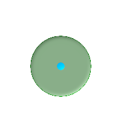
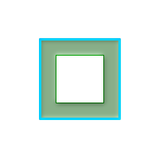

名前
ST_Buffer — あるジオメトリからの距離が指定された距離以下となる点全ての集合となるジオメトリを返します。
概要
geometry ST_Buffer(geometry g1, float radius_of_buffer, text buffer_style_parameters = '');
geometry ST_Buffer(geometry g1, float radius_of_buffer, integer num_seg_quarter_circle);
geography ST_Buffer(geography g1, float radius_of_buffer, text buffer_style_parameters);
geography ST_Buffer(geography g1, float radius_of_buffer, integer num_seg_quarter_circle);
説明
このジオメトリ/ジオグラフィからの距離が指定された距離以下となる点全てを表現するジオメトリ/ジオグラフィを返します。
ジオメトリ: 計算は、ジオメトリの空間参照系で行われます。形状制御のために異なる終端キャップと継ぎ目を設定する機能が1.5で導入されました。
![[注記]](images/note.png) | |
負の半径: ポリゴンでは、負の半径が使えます。ポリゴンを拡張させずに縮小させることができます。 |
| |
ジオグラフィ: ジオメトリ実装にかぶさる、薄いラッパです。ジオグラフィオブジェクトのバウンディングボックスに最適なSRIDを決定し (UTMが望ましいですが、ランベルト正積方位図法 (北/南)や、最悪のシナリオではメルカトルに頼ります)、その平面でバッファを生成し、WGS84ジオグラフィに戻します。 |
![[警告]](images/warning.png) | |
ジオグラフィでは、オブジェクトが二つのUTMゾーンをまたいだり、日付変更線をまたぐような、相当に大きい場合には、期待した通りの動作をないかも知れません。 |
Enhanced: 2.5.0 - ST_Bufferのジオメトリ対応版が強化され、バッファを施す側をside=both|left|rightで指定できるようになりました。
Availability: 1.5 - ST_Bufferが強化され、様々な終端と継ぎ目に対応するようになりました。たとえば、道路ラインストリングを道路ポリゴンに変換する際に終端を丸でなく平面や四角で処理したい場合などに使えます。ジオグラフィ用の薄いラッパが追加されました。
第3引数 (現在ジオメトリしか適用できません)で、4分の1円に近づけるための区分数を指定でき (整数の場合、デフォルトは8です)、また、空白区切りのkey=valueペア (文字列の場合)を、次に示す操作として指定することができます。
'quad_segs=#' : 4分の1円区分数に近づけるために使われる区分の数 (デフォルトは8)。
'endcap=round|flat|square' : 終端スタイル (デフォルトは"round")。'butt'は'flat'の同意語として受け付けます。
'join=round|mitre|bevel' : 接続スタイル (デフォルトは"round")。'miter'も'mitre'の同義語として受け付けます。
'mitre_limit=#.#' : マイター比 (訳注: 継ぎ目の内側と外側の距離と線幅との比)の最大値 (継ぎ目スタイルがmiterである場合のみ有効)。'miter_limit'は'mitre_limit'の同義語として受け付けます。
'side=both|left|right' : 'left'または'right'については、線の方向から見た相対的なサイドで、ジオメトリの片側バッファを実行します。これはLINESTRINGジオメトリにだけ関連して、POINTまたはPOLYGONジオメトリには影響がありません。デフォルトでは終端スタイルは四角形です。
半径の単位は空間参照系の単位です。
入力は、POINT, MULTIPOINT, LINESTRING, MULTILINESTRING, POLYGON, MULTIPOLYGON, GEOMETRYCOLLECTIONが可能です。
| |
この関数は第3次元 (Z軸)は無視し、3次元ジオメトリが与えられても、常に2次元バッファを返します。 |
GEOSモジュールで実現しています。
 This method implements the OpenGIS Simple Features
Implementation Specification for SQL 1.1. s2.1.1.3
This method implements the OpenGIS Simple Features
Implementation Specification for SQL 1.1. s2.1.1.3
This method implements the SQL/MM specification. SQL-MM 3: 5.1.17
| |
この関数はしばしば間違って半径探索に使われています。バッファを生成して半径探索に使うのは遅いし無意味です。ST_DWithinを使います。 |
例
 quad_segs=8 (デフォルト)
SELECT ST_Buffer(
ST_GeomFromText('POINT(100 90)'),
50, 'quad_segs=8');
| quad_segs=2 (不十分)
SELECT ST_Buffer(
ST_GeomFromText('POINT(100 90)'),
50, 'quad_segs=2');
| |
endcap=round join=round (デフォルト)
SELECT ST_Buffer(
ST_GeomFromText(
'LINESTRING(50 50,150 150,150 50)'
), 10, 'endcap=round join=round');
| endcap=square
SELECT ST_Buffer(
ST_GeomFromText(
'LINESTRING(50 50,150 150,150 50)'
), 10, 'endcap=square join=round');
| endcap=flat
SELECT ST_Buffer(
ST_GeomFromText(
'LINESTRING(50 50,150 150,150 50)'
), 10, 'endcap=flat join=round');
|
join=bevel
SELECT ST_Buffer(
ST_GeomFromText(
'LINESTRING(50 50,150 150,150 50)'
), 10, 'join=bevel');
| join=mitre mitre_limit=5.0 (デフォルトの最大マイター比)
SELECT ST_Buffer(
ST_GeomFromText(
'LINESTRING(50 50,150 150,150 50)'
), 10, 'join=mitre mitre_limit=5.0');
| join=mitre mitre_limit=1
SELECT ST_Buffer(
ST_GeomFromText(
'LINESTRING(50 50,150 150,150 50)'
), 10, 'join=mitre mitre_limit=1.0');
|
side=left
SELECT ST_Buffer(
ST_GeomFromText(
'LINESTRING(50 50,150 150,150 50)'
), 10, 'side=left');
| side=right
SELECT ST_Buffer(
ST_GeomFromText(
'LINESTRING(50 50,150 150,150 50)'
), 10, 'side=right');
| side=left join=mitre
SELECT ST_Buffer(
ST_GeomFromText(
'LINESTRING(50 50,150 150,150 50)'
), 10, 'side=left join=mitre');
|
右回り、ポリゴン境界は左
SELECT ST_Buffer(
ST_ForceRHR(
ST_Boundary(
ST_GeomFromText(
'POLYGON ((50 50, 50 150, 150 150, 150 50, 50 50))'))),
), 20, 'side=left');
|  右回り、ポリゴン境界は右
SELECT ST_Buffer(
ST_ForceRHR(
ST_Boundary(
ST_GeomFromText(
'POLYGON ((50 50, 50 150, 150 150, 150 50, 50 50))'))
), 20,'side=right')
|
-- ポイントに対する近似円バッファ
-- 4分の1円を2点で近似するようポイントに施したバッファは8辺のポリゴンです。
-- (ダイアグラム参照)
SELECT ST_NPoints(ST_Buffer(ST_GeomFromText('POINT(100 90)'), 50)) As promisingcircle_pcount,
ST_NPoints(ST_Buffer(ST_GeomFromText('POINT(100 90)'), 50, 2)) As lamecircle_pcount;
promisingcircle_pcount | lamecircle_pcount
------------------------+-------------------
33 | 9
-- 手軽だけれども不十分な円(4分の1円で2点だけの八角形)
-- 次に示すのは100メートルの八角形です。
-- 座標系は、元はNAD 83経度緯度で、メートル単位マサチューセッツ州平面に変換してから、
-- メートルでバッファを取っています。
SELECT ST_AsText(ST_Buffer(
ST_Transform(
ST_SetSRID(ST_MakePoint(-71.063526, 42.35785),4269), 26986)
,100,2)) As octagon;
----------------------
POLYGON((236057.59057465 900908.759918696,236028.301252769 900838.049240578,235
957.59057465 900808.759918696,235886.879896532 900838.049240578,235857.59057465
900908.759918696,235886.879896532 900979.470596815,235957.59057465 901008.759918
696,236028.301252769 900979.470596815,236057.59057465 900908.759918696))